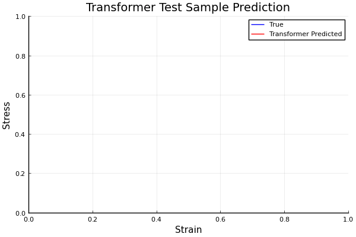
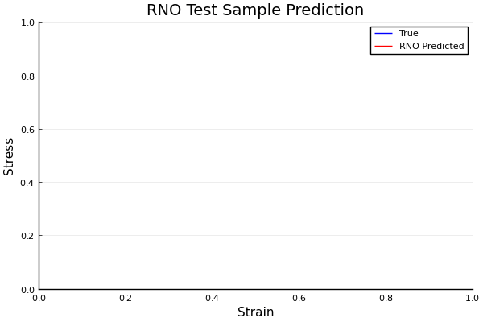

Hi, I'm Prithvi
CTO of Zetta. Find me in San Francisco! Originally from north-west UK.
No blog. No substack. No fricking manifestos. This is it.
Generative Model
KAEM: Kolmogorov-Arnold Energy Model
KAEM is a fast and interpretable generative model for any data modality. Inverse transform sampling from its latent prior produces exact samples within a single forward pass. All training strategies avoid the use of encoders and diffusion. It can even be trained with importance sampling on some datasets, which is stupid cheap.
KAEM was created as a first step towards my strict requirements for the scientific method. Things are currently unsustainable, uninterpretable, uninformed, inaccessible, not standardised, and unpredictable. That's expected for new tech, but we clearly have a lot of work to do.
Read the paper →Approach
Inductive Biases
Attention encodes very little inductive bias. Its weights are entirely data-driven. Flexible when abundant data is available, but less suitable to domains where data is limited or relationships lie on a complex manifold. Here, bespoke models with stronger inductive biases perform better in terms of training efficiency, generalisation, explainability, accuracy, and data efficiency.
Neural Operators are designed for problems governed by PDEs, since they learn mappings between infinite-dimensional function spaces. Once trained, they can map to a space of interest within a single model pass. People think AI is unsustainable, but this is a hopeful end-to-end replacement of the traditionally iterative, slow, and expensive solvers running on today's HPCs.
Darcy Flow
github ↗


Viscoelastic Materials
github ↗

Approach
Intelligence is Hierarchical
Good mechanics can compensate for bad software. Good software will never be able to compensate for bad mechanics. The industry is quick to default to fancy algorithms, but the best engineers will always be looking for solutions in the form of mechanical or analogue systems for their simplicity, reliability, and cost-effectiveness.
"Analogue" systems that reflect the physical systems that they're controlling generally outperform unspecific designs. CPGs are quick to recover their oscillatory gaits with little feedback. They're analytically simpler to design, tune, and implement, and are utterly inexpensive compared to optimisation or data-driven approaches to control.
Central Pattern Generators
github ↗
Approach
Uncertainty Quantification
While there are cults arising in service of algorithms, the engineers know that data is where magic manifests. Uncertainty quantification is how engineers compensate where our data-driven methods fail, since we can't afford to be wrong. Epistemic uncertainty is used to guide where we prioritise drug synthesis, experimentation, and risk assessments, since mistakes are expensive and unnecessary.
Active Learning on AqSolDB
github ↗